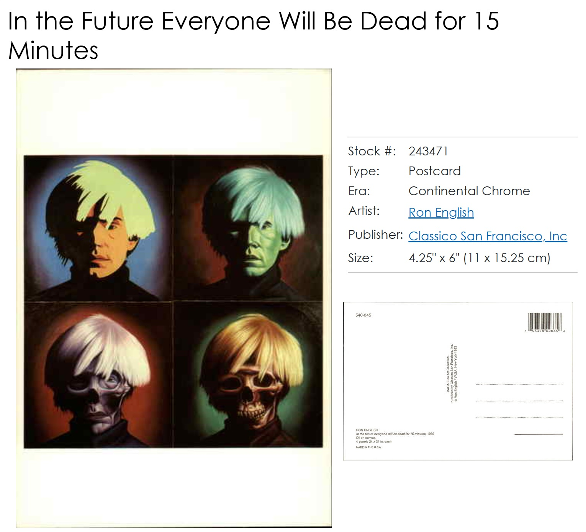
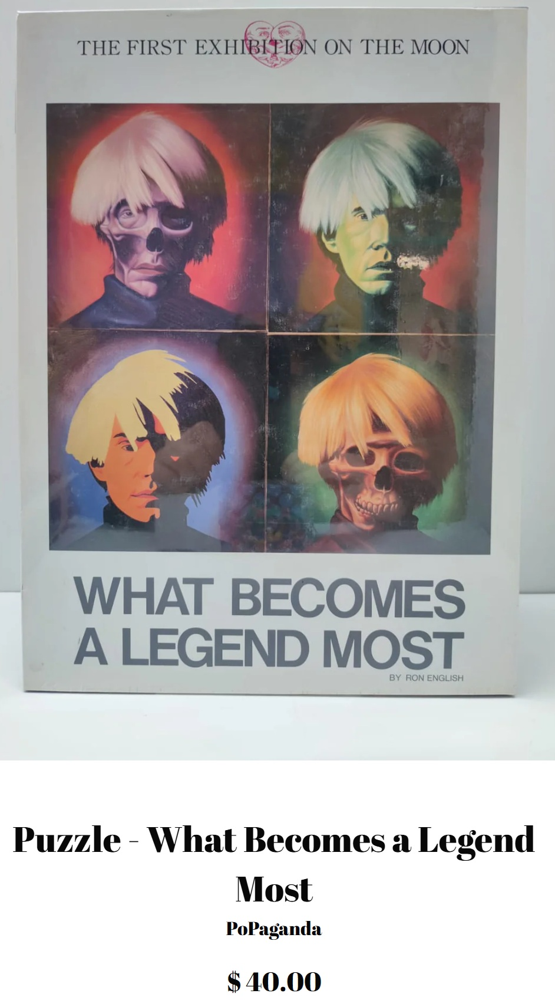

Provenance
Private collection.
Literature
Teresa Wong, “Ron English Speaks a Language All His Own,” Museum & Arts Houston, June 1992, p. 38.

Notes
Ancillary Documentation



Private collection.
Teresa Wong, “Ron English Speaks a Language All His Own,” Museum & Arts Houston, June 1992, p. 38.

